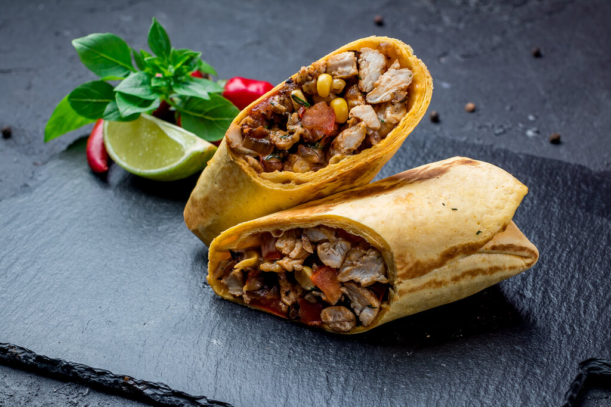

Baked Chicken Burrito Recipe

How To Make Baked Chicken Burrito
Here’s a tasty baked chicken burrito topped with salsa, jalapenos, and olives. Easy food for a crowd in just 30 minutes
Ingredients
- 4 tortillas, large, corn or flour
- 1 cup *Mexican red rice, (see Recipe Notes for recipe) or brown rice
- ½ cup refried beans, or black beans
- ½ cup corn
- 1 lb chicken breast fillet
- 2 cups Mexican cheese blend, or shredded cheddar cheese
- 4 oz bell pepper, cored, deseeded, and thinly sliced
- 1 oz taco seasoning, (1 packet)
- 1 tbsp oil, olive or vegetable
Steps
- Preheat the oven to 350 degrees F
- Slice the chicken breast into thin strips.
- Season the chicken with half of the taco seasoning mix.
- Heat oil in a medium skillet. Saute the chicken for about 7 minutes or until it is no longer pink and the juices come out clear.
- Add the bell peppers and saute for another 1 minute.
- In a shallow baking dish, place tortillas inside.
- Divide chicken, beans, corn, and rice up between the tortillas.
- Sprinkle cheese over the chicken and fold one half of the tortilla over the other.
- Sprinkle more cheese on top of each tortilla and place burritos in the oven.
- Bake for 5 to 10 minutes or until the cheese is melted and the tortilla is slightly crispy.
- Garnish with salsa, jalapenos, and black olives. Serve.